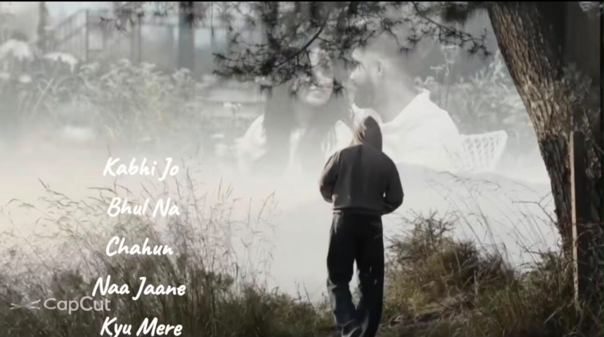

The 2026 The End Tum Yeh Ate Ho CapCut Template is a simple way to create a stylish and emotional video without doing all the editing yourself. This template already has the main effects, transitions, and music timing ready. You only need to add your photos or video clips.

First, download and open the CapCut app on your phone. Make sure you are using the latest version of the app so the template works properly. You can then open the template link and tap on the Use Template option.
After opening the template, CapCut will ask you to select photos or videos from your gallery. Choose the pictures or clips you want to use in your video. For the best result, select clear photos with good lighting and make sure they match the number of clips required by the template.
Once you select your media, CapCut will automatically place everything into the template. You do not need to manually add transitions or effects. The app will adjust your photos according to the timing already set in the template.
You can preview the video after adding your photos. Check each scene carefully to make sure the correct photo is appearing at the right time. If you do not like a particular photo, you can easily replace it with another one from your gallery.
The template also gives your video a cinematic and trending look. The “2026 The End” style works especially well for memories, friendship videos, relationship edits, travel moments, and end-of-year videos. You can use your own clips to give the edit a personal touch.
If you want to make the video look better, use high-quality photos and avoid pictures that are too dark or blurry. Portrait photos can also work well when the template has close-up scenes. Try to choose photos that match the mood of the music.
After you are happy with the preview, tap the Export button. CapCut will process the video and save it to your device. Choose a suitable quality option if CapCut gives you different export settings.
You can then share the finished video on Instagram Reels, YouTube Shorts, Facebook, or WhatsApp. Before uploading, you can also add your own caption, hashtags, or other text if needed.
If the template link does not open directly, try opening it from your phone or through the CapCut app. Sometimes templates may not be available in every country or may stop working if the original creator removes them.
That’s it. With this 2026 The End Tum Yeh Ate Ho CapCut Template, you can create a trending-style video in just a few steps. Simply open the template, add your photos or clips, preview the result, and export your final video.